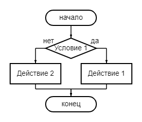

Ключевые понятия
- ветвление
- полное ветвлене
- неполное ветвление
- разветвляющиеся алгоритмы
Полное и неполное ветвление
В зависимости от того сколько предписаний содержит условие ветвление может быть полным или не полныым.
| название | полное ветвление | неполное ветвление |
|---|---|---|
| схема |  |  |
| запись | если <условие> то <действие 1> иначе <действие 2> все | если <условие> то <действие 1> все |
Для записи условий используются операции сравнения. Условия, состоящие из одной операции сравнения, называются простыми. В качестве условий при организации ветвлений можно использовать и составные условия. Составные условия получаются из простых с помощью логических связок and, or, not.
Комбинация нескольких ветвлений
Часто выбор необходимо осуществить не из двух, а трех и более вариантов. Одним из способов построения соответствующего алгоритма является комбинация из нескольких ветвлений.
Практическое задание
Для выполнения практического задания используйте исполнитель Робот
1. Составьте алгоритм, который делит четное число на 2, а к нечетному прибавляет 3
2. Определите вид ветвления для алгоритма, нарисуйе блок-схему.
нач
вправо
вниз
вниз
влево
если снизу свободно
то вниз
иначе вправо
все
вниз
если слева стена
то вправо
все
кон

Контроль по теме
Тест состоит из 5 теоретических вопросов по пройденной теме. На его прохождение у вас будет 10 минут. При выполнении контрольного задания будьте внимательны, обраите внимание, что вопросы могут содержать несколько правильных ответов